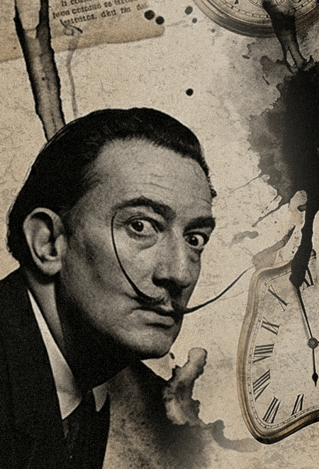
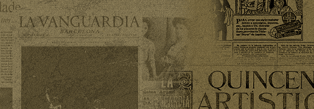
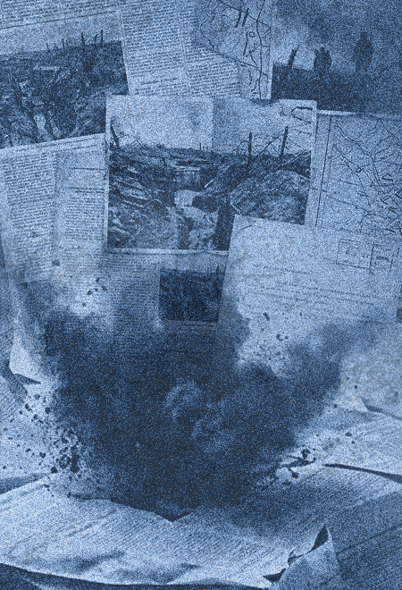
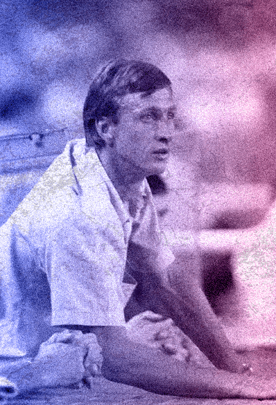
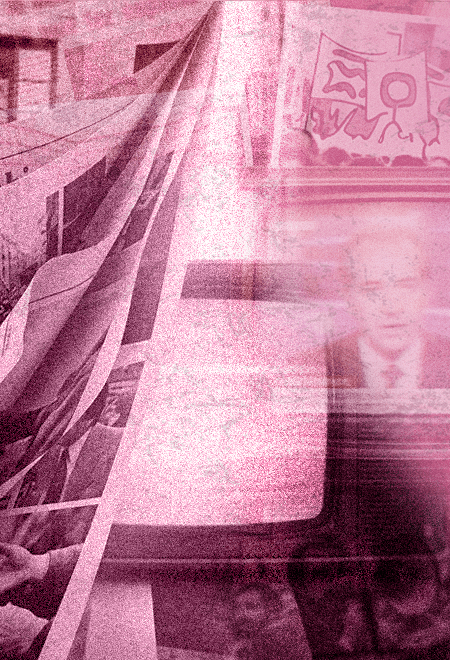
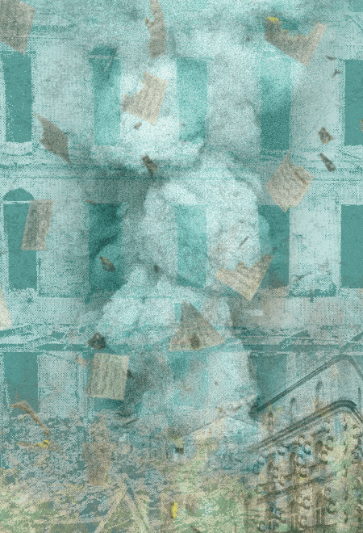
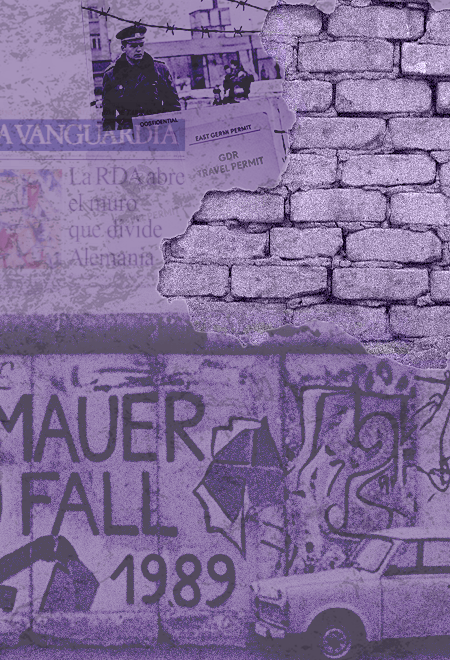

El eco de las primeras voces
12 de marzo de 2026
Cómo unos minutos de cinta perdida cambiaron la versión oficial de los hechos.
Escuchar episodioUn viaje sonoro por las historias y las voces que el tiempo no debería silenciar
Escuchar último episodioLa hemeroteca guarda voces que el tiempo no debería silenciar, fragmentos de una memoria colectiva que vuelve a sonar cada semana. Recuperamos documentos, testimonios y silencios para reconstruir lo que de verdad ocurrió, lejos del titular y cerca de las personas que lo vivieron. Cada episodio

es un archivo abierto: escucha, contrasta y recuerda.
12 de marzo de 2026
Cómo unos minutos de cinta perdida cambiaron la versión oficial de los hechos.
Escuchar episodio
19 de marzo de 2026
La correspondencia que el archivo escondió durante cuatro décadas.
Escuchar episodio
En vivo
Hoy · 20:00 h
Un episodio especial emitido en directo desde el propio archivo histórico.
Escuchar en directo
26 de marzo de 2026
Una declaración omitida en los periódicos reabre el caso años después.
Escuchar episodio
2 de abril de 2026
Un negativo olvidado revela quién estaba realmente en la sala.
Escuchar episodio
9 de abril de 2026
El cierre de la serie: todo lo que el tiempo no consiguió borrar.
Escuchar episodioCada episodio es una puerta a un archivo vivo. Sumérgete en las voces, los documentos y las historias que siguen resonando, y descubre todo lo que la memoria todavía tiene por contar.
Ver la hemeroteca